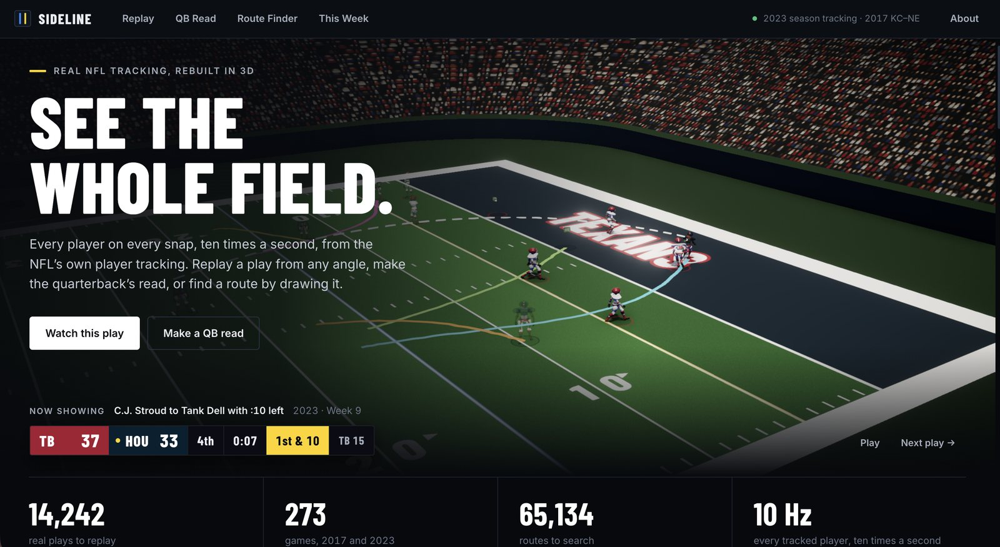
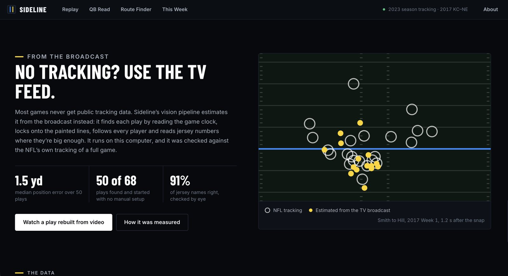

03 / 06
- Context
- Personal, solo
- Role
- Everything
- Status
- Open source
- 1.5 yd
- median error vs NFL tracking
- 14,242
- plays rebuilt in 3D
- 65,134
- routes searchable
Sideline
Real NFL plays rebuilt in 3D, and recovered from broadcast video
A 3D replay of real NFL plays built from league player-tracking data, plus a computer-vision pipeline that recovers player positions from ordinary broadcast footage and is scored against the NFL’s own tracking.

What it is
Sideline rebuilds real NFL plays in 3D from player-tracking data. Every tracked player, ten times a second, in a stadium you can move the camera around: the broadcast angle, the All-22, the end zone, or the quarterback's own eyeline.
On top of the replay there are three other ways in. QB Read freezes the play at the throw and asks you to pick a receiver before showing where the ball actually went and how open everyone was. Route Finder lets you sketch a route and ranks 65,134 real routes by how closely they start the same way. This Week carries the current season's scores, win-probability curves and the plays that swung each game.
The hard part: no tracking data for most games
Public tracking data covers a sliver of football. The NFL releases it through the Big Data Bowl for one season of pass plays and one full 2017 game. Everything else, including every game played last weekend, has no public coordinates at all.
So the interesting question is whether you can recover them from the thing that does exist for every game: the television broadcast. That is what the vision pipeline does, and it is the part of this project I would want to be judged on.
How the video pipeline works
Finding the play comes first. An OCR model reads the score bar's quarter and game clock twice a second, and the snap is the frame where the clock ticks below the play's known snap time. That removes the need to tell the system where anything is.
Then the camera has to be located, which is the whole problem in disguise. A to-scale template of the field's paint, yard lines, sidelines, hash marks and ticks, is fitted to a paint mask by optimising an eight-parameter homography against a distance transform; ICP recovers when the fit drifts badly. Across fast pans, ORB features and RANSAC chain the camera frame to frame through motion blur, and fits that disagree with the measured motion are thrown out.
Players come from YOLO11 at 1280px, identities are held together by ByteTrack, teams are split by k-means on torso colour in Lab space with each cluster tied to offense or defense by which side of the line it starts on, and jersey numbers are read by OCR over three contrast variants, voted across frames and constrained to the 22 numbers actually on the field for that play.
Measured against the league's own data
The output is scored, not eyeballed. Every play of a 2017 game was found, fitted and tracked with no manual setup, then matched against the NFL's tracking of the same plays by Hungarian assignment.
Fifty of 68 plays were found and started automatically. Across those fifty, median position error is 1.51 yards, mean 1.84, ninetieth percentile 3.91, with 71% of positions matched to a tracked player. On a single play with a hand-made first-frame fit, median error drops to 0.63 yards and 95% match. Jersey names come out right 91% of the time on the names that are readable at all.
Two fixes found while measuring did most of the work on that single play, taking median error from 1.84 to 0.63 yards. Hash marks were being discarded: perspective squashes them into dots and a blob filter was throwing them away, so they went back into the paint mask. And paint hidden behind players or the score bar was being counted as a miss, which pushed the fit into squashing the field to avoid it.
Part of the gap that remains is not error at all, it is a difference in what each system measures. The league's chips sit in the shoulder pads. The video sees feet.

What is deliberately not a model
A lot of this project is not machine learning, and that is a choice rather than a gap. Camera location, pan tracking and field registration are classical computer vision and optimisation, because the field is a known rigid object with exact dimensions and fitting it is better posed than learning it.
Expected points and win probability are not mine either. They come from nflverse's nflfastR models, trained on decades of play-by-play, and the project consumes them rather than pretending to have built them. The README lists which models are pretrained and which are not, because a reader deserves to know where the work actually is.
Honest limits
The 2023 tracking release has no linemen and ends at the catch, so the 2017 game is the only source where a full play with all 22 players exists. Player models are a dressed mannequin rather than a likeness.
The vision pipeline needs one calibrated wide shot per broadcast, and 18 of 68 plays in the test video had no usable wide shot near the snap. A play is followed only until the first camera cut, players who leave frame are held and faded, most players stay unnamed because numbers are only readable when someone is large in frame, and the ball is not tracked at all.
Anything the data does not cover is drawn faded and labelled rather than invented, which is the same rule the rest of my work runs on.
Stack TypeScript, React and three.js · Python data pipeline · PyTorch, YOLO11, ByteTrack and EasyOCR · classical CV: homography fitting, ICP, ORB and RANSAC · k-means team splitting · Node animation baker · four test suites
Source Runs locally; the tracking data is a Kaggle download, so there is no hosted demo.